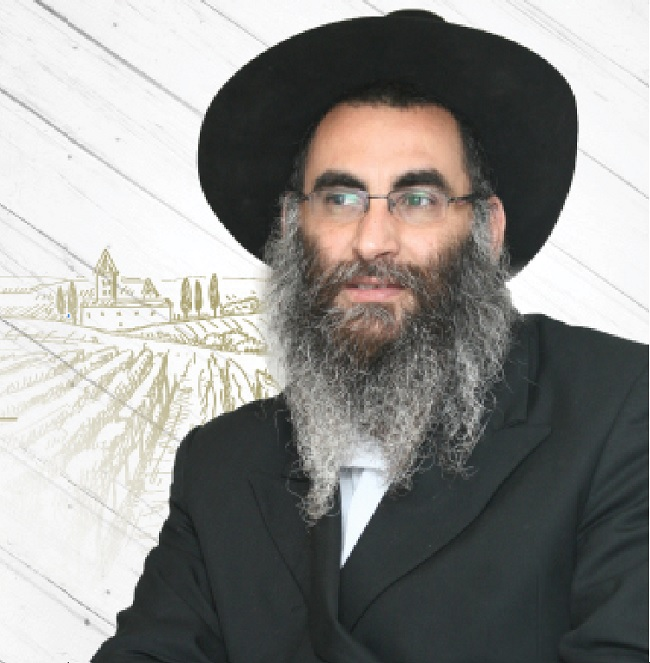

גלה לנו את סוד היין?
תופעת ייקבי הבוטיק ־ יין ביצור ביתי הולכת ומתפתחת בעולם היין וגם בקהילת חב״ד, גם בגלל האיכות ובעיקר בגלל הכעורות » הכירו את ר׳ שחר שושני, יצרן יין (״אני לא יינן״) ובעלים עול יקב בוטיק בצפת » לכבוד . ^חג הפורים ישבנו למשתה ספונטני על כוס יין נושובח ושמענו על סודות תעשיית היין, על האופי המיוחד של יינו
תופעת ייקבי הבוטיק ־ יין ביצור ביתי הולכת ומתפתחת בעולם היין וגם בקהילת חב״ד, גם בגלל האיכות ובעיקר בגלל הכעורות » הכירו את ר׳ שחר שושני, יצרן יין (״אני לא יינן״) ובעלים עול יקב בוטיק בצפת » לכבוד . ^חג הפורים ישבנו למשתה ספונטני על כוס יין נושובח ושמענו על סודות תעשיית היין, על האופי המיוחד של יינות בוטיק, ואיר זה שלכל היינות התעשייתיים יש אותו טעם? » אז מיזגו לעצמכם כוס יין גדולה וקבלו ראיון קטיפתי בעל אופי חזק, אדומה מתוקה וגוון עמוק ואדמדם בניחוח הרי הגליל » לחיים!
מאת: זלמן צרפתי

גם בציבור החרדי, כולל הציבור החב”די, מתפתחת התופעה של ייצור יין עצמי. בעיקר בגלל הכשרות אבל גם בגלל האיכות. במשך עשרות שנים הוביל את הייצור ייקב שפרינגר הוותיק והמפורסם בכפר חב”ד. בשנים האחרונות התווספו לרשימה עוד כמה אברכים מאנ”ש.
בשביל הנשמה
אחד מהם הוא ר’ שחר שושני מצפת בעל יקבי שושני. “זה בשביל הנשמה”, הוא אומר, “לא הופכים להיות עשירים מזה”. ייצור הבוטיק הוא יקר הרבה יותר מהיצור התעשייתי, אבל בסופו של דבר אתה צריך להתחרות ביצור התעשייתי כך שהמטרה היא בעיקר הסיפוק הנשמתי.
ביום יום מתפרנס שושני כמנהל בית התבשיל של כולל חב”ד בצפת, ובין לבין הוא מייצר יין. לקראת פורים ישבנו למשתה קטן על כוס יין אדום ושמענו ממנו קצת סודות היין וגם על המהפך בחייו האישיים.
גלה לנו את סוד היין?
סוד היין הוא הענבים. אנחנו עוקבים אחרי הענבים מהרגע שהם על העץ, ענבים טובים זה אומר יין טוב. אין בזה קונצים או הוקוס פוקוס. ענבים טובים גם עולים בהתאם. אתה יכול ליצר יין מענבים שעולים 2 שקל לקילוגרם, ואתה יכול ליצר מענבים שעולים 10 ש”ח לק”ג. בהתאם לזה גם משתנה מחיר היין כמובן.
מעבר לזה, אני עוקב אחרי הכרם, צריך לבדוק שהיקב מדולל. כשיש עומס של אשכולות על הגפנים, הענבים גדלים בצפיפות מה שפוגם אחר כך באיכותם ובטעם היין. אני מכיר כל עץ בכרם, כשאני קוטף אשכול ענבים ומכניס לדלי, אני יודע עליו הכל.
מסתבר שלתנאי היצור של ייקבי בוטיק, ליחס הפרטני ולטיפול הצמוד יש לא מעט יתרונות גם בהיבט הכשרותי. “כשבוצרים בכמויות מסחריות, הבציר נעשה במכונות ענק, וכל מה שיש בכרם נטחן ביחד עם הענבים כולל לכלוך, חרקים וזוחלים שונים. אמנם מבחינה הלכתית זה מתבטל ולכן זה מקבל גם הכשר מהודר, אבל אצלינו דברים כאלו לא יכולים לקרות.
יש גם בעיות עם גויים שנמצאים באזור, הרי בכל תהליך יצור היין צריכים לעבוד רק יהודים שומרי מצוות. כשמדובר ביצור קטן, אנחנו יכולים להשגיח שכל העבודה מהכרם ועד הבקבוקים, עובדים רק יהודים יראי שמיים, עובדים מקצועיים ותמימים שעובדים כדי לממן את הכרטיס שלהם לרבי וזו בכלל זכות שלנו.
הבציר ביקבי בוטיק נעשה בצורה ידנית. “אין לנו מכונות, אנחנו עובדים עם כרמים קטנים, בוחרים את האשכולות אחד אחד, בוצרים, מכניסים לדליים ומעמיסים ברכב”.
משדות רמת השרון לכרמי הגליל
לעולם היין הגיע שחר מעולם הכשרות בהשגחה פרטית. שחר נולד ברמת השרון להורים מסורתיים, אבא שגדל בשכונת ‘מאה שערים’ בירושלים ואימא עולה חדשה מאיראן, “יש לי זכרונות ילדות מימי כיפור שהיינו עושים אצל סבא וסבתא בירושלים. האווירה הייתה מרוממת ומדי שנה היינו צועדים לכותל המערבי, אבל זה נשאר אצלי בגדר פולקלור נחמד, לא מעבר לזה”.
החיים ברמת השרון של פעם, בלב שדות תותים ומרחבים פתוחים. לפני שבועת הנדל”ן של גוש דן הפכה כל חורשה למגדל מגורים, חיברה את שחר הצעיר ובני גילו לטבע. “כילד היינו מבלים שעות בשדות. אני והחברים שלי היינו מחוברים מאוד לטבע, וניצלנו כל הזדמנות כדי לטייל ברחבי הארץ.
הצבא מצא את שחר חדור מוטיבציה ורצון לשרת שירות משמעותי. “שאפתי להכי גבוה שאפשר, התגייסתי ליחידה מיוחדת - פלחה”ן (פלוגת החבלה וההנדסה) גבעתי. התחלנו את הטירונות שלושים וחמשה חיילים וסיימנו שניים עשר בלבד. השירות הצבאי היה קשה ומאתגר; הימים היו ימים של האינתיפאדה הראשונה ואנחנו הוצבנו ראשונים בנקודות החיכוך” מספר שחר.
הניסים שזעזו את הנשמה
השירות הצבאי המסוכן הוליד גם לא מעט ניסים שזעזעו גם את נשמתו של הצעיר הקשוח והמחוספס וניערו את גחלי הנשמה. “פעם הוצבנו בלבנון במוצב הכי קדמי, אל המפקדה הגיע מידע מהשב”כ שמחבלים מסוריה עומדים לתקוף את המוצב שלנו. הכנו להם מארבים בעמק המוביל, אך בסופו של דבר הם לא הגיעו. כך אירע כמה פעמים, עד שיום אחד הגיע מידע בדוק וודאי כאשר בקבוצת המחבלים היה מחבל שהוא עצמו היה המודיע של השב”כ. הוא סימן את עצמו בסימן כדי שנדע לא לפגוע בו. דווקא למארב הזה החליט המפקד שלא לקחת אותי, ובמקומי צירף חייל צעיר ביחידה.
כל תחנוניי לא עזרו, ואני הצטרפתי לצוות אחר של סגן מפקד הפלוגה והוצבנו במקום אחר. בפועל המידע הפעם היה מדויק, המחבלים אכן הגיעו והמפקד הסתער עליהם, אלא שלפתע היה לו מעצור ברובה. המחבלים שהבחינו בו, מיהרו להסתתר ולהשיב באש כבדה, ממנה נהרגו המפקד ועוד ארבעה חברים טובים, בהם אותו לוחם צעיר שהחליף אותי בתפקיד יורה רימונים. כל החיילים ביחידה לקחו קשה את האירוע, ואני שבעתיים; היה ברור לי שאם לא הייתי מוחלף, גורלי היה זהה”.
זה הנס הגלוי הראשון, אבל בהחלט לא האחרון. המצב בארץ ישראל והשירות הצבאי זימנו לו לשחר ניסים נוספים. “היו כל הזמן ניסים גלויים. מארב שעשינו בשכם וחטפנו מאחור בקבוק תבערה שבדרך נס לא פגע בנו, או מקרה נוסף עם חייל המילואים אמנון פומרנץ שנקלע עם מכוניתו למחנה פליטים ועשו בו לינץ מול עינינו אך לא יכולנו להגיש לו סיוע. החוויות הללו גרמו לי ולשאר הלוחמים לעשות חשבון נפש נוקב על משמעות ומהות החיים”.
לאחר הצבא, חש שחר תחושה של מחנק והחליט עם חבר נוסף לצאת לטיול ארוך למזרח הרחוק. היה זה לפני פסח של שנת תשנ”ב. “בנפאל פגשנו שני חב”דניקים צעירים שבאו על מנת לערוך ליל הסדר למטיילים הישראלים. חברי שהיה טבח מקצועי, ניצח על הכנת התבשילים ואני סייעתי בלוגיסטיקה. בליל הסדר הגיעו כאלף תרמילאים. אנחנו דאגנו לגשמיות והתמימים דאגו לרוחניות. אמנם לא הייתה זו הפעם הראשונה שפגשתי בפעילות חב”ד, אך העובדה שהייתי חלק מהעשיה, השפיעה עלי מאוד.
בלב התופת במזרח הרחוק
אם חשב שחר לצאת את הארץ כדי לברוח מהמתח של הסכסוך היהודי–ערבי, הרי שזה השיג אותו גם במזרח. “הגענו לניו דלהי בהודו, שם היינו אוכלים מידי יום במסעדה שהגישה אוכל ישראלי. יום אחד אני פוגש שם סועד ערבי, ומכיוון שאני יודע לדבר ערבית, התפתחה בינינו שיחה ערה וידידותית. לפני שיצא מהמסעדה, הניח ידו על כתפי ואמר לי: “אם הייתי יכול להרוג אותך, הייתי עושה זאת כעת ללא היסוס”. למחרת היה יום מאוד חם ועלינו לאכול על הגג. חלפו כמה דקות ופתאום פיצוץ עז החריד את המסעדה ופגע בתיירים מכמה מדינות שסעדו שם. מסתבר שאותו ערבי היה מחבל שהניח שם מטען נפץ.
מטען הנפץ הונח מתחת לשולחן הקבוע בו ישבנו. הצטמררתי רק מהמחשבה של מה היה קורה אילו לא עלינו לאכול על הגג. בדרך נס לא היו בפיגוע נפגעים יהודים או ישראלים, למרות שבדרך כלל המסעדה הזאת הייתה מלאה בתרמילאים ישראלים.
חוויות התופת ועימן הניסים שרדפו אחריו מסמטאות עזה ובקעות הלבנון אל המזרח הרחוק והשלו, היו עבורו כבר יותר מאיתות. המחשבות על מהות החיים ומטרתם לא הרפו, ושחר חיפש אחר משמעות עמוקה יותר לחייו. בתוך תוכו הוא הרגיש שהתשובה לשאלותיו נמצאת ביהדות וידע שההתקרבות לתורה ומצוות קרובה מתמיד.
השלוחים שפגשו את שחר בסידני שבאוסטרליה, לשם טס בעקבות הפיגוע, היו שם כדי לכוון את הצעיר הצמא אל השוקת. “התחלתי להשתתף בסעודות שבת ולפקוד את בית הכנסת. התחברתי שם לצמד התמימים חיים יוסף גינזבורג ושלמה דיסקין שעשו שם פעילות מבורכת עם הישראלים. והתחלתי להתקרב יותר ויותר”
סידני - תל אביב - צפת
שחר שב ארצה ויצר קשר עם הרב גינזבורג שרק החל את שליחותו בצפון תל אביב לצד לימודיו בכולל בכפר חב”ד. “יום אחד הרב גינזבורג לקח אותי מתל אביב ל770 בכפר חב”ד, למדנו יחד את פרק י”ט שבתניא, שם מסביר אדמו”ר הזקן על נר ה’ נשמת אדם, שהנר רוצה להימשך למעלה. כל נשמה רוצה להימשך למקור חוצבה ולהידבק באלוקות. הרגשתי שאדמו”ר הזקן מדבר אלי ממש. התרגשתי מאוד ובאותו רגע קיבלתי החלטה לעשות שינוי אמיתי בחיי.
בעצה עם הרב גינזבורג נסע שחר ללמוד בישיבה בצפת. לאחר מספר שנים בישיבה נישא שחר לבת קהילת חב”ד בצפת והזוג הצעיר קבע את ביתו בבירת הגליל.
מעולם הכשרות לעולם היין
ואיך הגעת ליצור יין?
“האמת שהגעתי לזה ממש בהשגחה פרטית. שנים רבות שימשתי כמשגיח כשרות בכרמים. תפקידי היה לאשר כרמים לבצירה. מניסיוני גיליתי בעיות רבות שמי שאין לו ניסיון בתחום, לא יבחין בהם. לדוגמה, שתילת גפנים צעירים במקום כאלה שנאכלו על ידי פרות או נבלו בתוך שורה של גפנים וותיקים, ואז מתעוררת בעיה של ערלה, מכיוון שהמכונה עוברת בכל העצים וקוטפת בצורה מכנית מכל העצים. השנים הרבות שהתעסקתי בכרמים גרמו לי ללמוד את התחום על בוריו.
כיון שמטבעי אני אדם שאוהב ליצור ולעשות, יחד עם החיבור לאדמה ולטבע, כל חיי התחברתי לאדמה ולטבע, התחלתי לנסות לייצר יין בעצמי. זה לא היה קל, היו בהתחלה המון ניסיונות שכשלו, למדנו שוב, הפקנו את הלקחים עבדנו דרך של ניסוי ותהיה עד שהצלחנו להגיע ליין טוב ואיכותי.
בהתחלה עבדנו מהבית. בזמן הבציר, הבית היה נראה כמו יקב, את היין חילקנו למשפחה ולחברים, אנשים שטעמו את היין המליצו לנו להתחיל למכור, מכרנו קצת בקהילה מסביבנו, אחר כך שכרנו מקום לשם העברנו את היצור והתחלנו לייצר בכמויות גדולות יותר. אם כי זה עדיין נחשב יצור בהיקף מאוד קטן יחסית ליקבים.
סודות היין
איך שולטים על הטעם הסופי של היין? פשוט מבצעים את המתכון בדייקנות?
שאלה מצויינת. ותתפלא לשמוע שאנחנו ביקבי הבוטיק לא תמיד מצליחים לשלוט בטעם הסופי של היין. ביקבים גדולים ותעשייתיים, עובדים ייננים שתפקידם לתת ליין את טעמו. היינן הוא בעצם סוג של מהנדס מזון או כימאי. הוא טועם את היין, ומוסיף לו מים סוכר, אלכוהל, גליצרין, ועוד כל מיני חומרים שנותנים ליין את טעמו וכמובן גם חומרים משמרים כמו ביסלופיט.
היקבים הגדולים חייבים לעבוד כך, משום שהם אינם יכולים לטעות. אם תקנה יין של יקב גדול יהיה לו אותו טעם בדיוק כמו אשתקד וכמו לפני עשור. בדיוק כמו שתקנה עוגיות מחברה גדולה יהיה להם תמיד את אותו טעם, וזה לא כמו בבית שפעם העוגה יוצאת מוצלחת יותר ופעם פחות.
אצלנו לעומת זאת, אף פעם היין לא יוצא אותו דבר. יש שנים שיוצא לי יותר טוב, ויש שנים שפחות. אתן לך דוגמא. יש את היין שיוצא בסחיטה והיין שיוצא מהענב לבד ללא סחיטה. זה משפיע על היין, לכל אחד יש טעם שונה. אני לא יינן. אני לא יודע להנדס את היין. אצלי הענבים מדברים. אני איש יצור, אני עושה את היין ונותן ליין להגיד את שלו.
מה ההרגשה של יוצר יין כשיוצא לו יין טוב?
דווקא השנה, אולי בגלל שזה הבציר הראשון אחרי השמיטה, הענבים היו מיוחדים ויצא יין מיוחד מאוד, יש ברכה אחרי השמיטה. אין ספק. לא יצא לי יין כזה אף פעם. אין ספק שכשיוצא לך יין טוב ואנשים נהנים, זה נותן לך תחושה של שמחה וסיפוק גדול.
קורה לפעמים שיין מחמיץ?
וודאי. זה תלוי בכל כך הרבה פרמטרים. זה כמו לזרוע באדמה, אתה שותל את הגרעין, משקה, מטפל ומתפלל שיצמח. אנחנו מכניסים את היין לחביות, עושים מה שצריך ומתפללים. מאמין בחי העולמים וזורע.
הענבים מהם מיצרים יין, זה אותם ענבים כמו שקונים בסופר?
לא. ממש לא. הענבים למאכל והענבים ליין אלו זנים שונים. גם בתוך ענבי היין יש הרבה סוגים של זנים. קברנה סובניון ומרלו למשל הם זני ענבים שמהם נגזר שם היין.
מה ההבדל בין יין מבושל ולא מבושל?
מבחינת איכות יין לא מבושל נחשב הרבה יותר איכותי. הבישול פוגע בטעמו המזוכך של היין. מבחינה הלכתית, יין מבושל חוסך בעיות במגע עם גויים או מחללי שבת.
אצלינו היין לא מבושל ואנחנו מקפידים מאוד על כך שכל העבודה כולה מהבציר ועד האריזה נעשית אך ורק על ידי יהודים שומרי תורה ומצוות.
מעבר לזה, יש גם הידור מצוה בליל הסדר לשתות יין לא מבושל. ואנשים לא יודעים, אבל יש עניין גם ביין עם אלכוהל. למשל בליל הסדר יש ענין שיהיה יין שראוי להיות על גבי המזבח, ויין כזה חייב להיות עם אלכוהול.
•
בתחילת שיחתנו אמרת שאתה מייצר את היין בשביל הסיפוק הנשמתי. איזה סיפוק יש בייצור היין?
קודם כל יהודי ובפרט חסיד חייב לראות בכל מה שהוא עושה חלק מתפקידו לעשות לה’ יתברך דירה בתחתונים ולהביא את הגאולה.
מבחינתי אני משתדל לנתב את העבודה לאפיקים רוחניים. ראשית המפגש עם אנשי תעשיית היין, כורמים, אנשי היקבים, ובעלי המפעלים השונים, כשהם נפגשים עם חסיד שמתעסק ומבין בתחום שלהם, זה מוביל לשיחות רבות על יהדות ואמונה.
הסיפוק העיקרי הוא כמובן שאנחנו זוכים להכין יין איכותי בכשרות מהודרת. לפעמים יש גם בקשות מיוחדות כמו למשל עבור אחד ממוסדות חב”ד הגדולים בארץ ישראל שביקשו לחלק למקורביהם מתנה עם ערך מוסף, הכנו עבורם סדרה מיוחדת של יינות עם יין של הרבי. זה היה פרוייקט מיוחד ומורכב, שגם לא ממש השתלם כלכלית, אבל בכל התהליך הרגשנו ממש ‘עוסקים במצוה’ שאנחנו עוזרים לחבר יהודים לרבי.
מה השלב הבא?
השלב הבא הוא בעזרת ה’ לראות את הרבי מתגלה תיכף ומיד ומחלק ‘כוס של ברכה’ מהיין שלנו. כל שנה, כשאני עובד על היין, אני חולם על הרגע הזה.